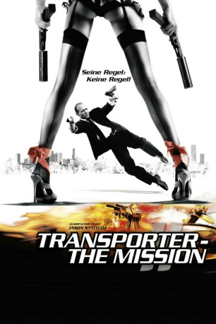
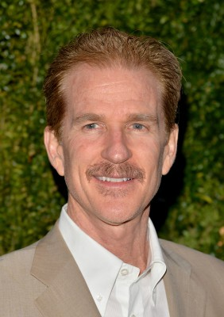
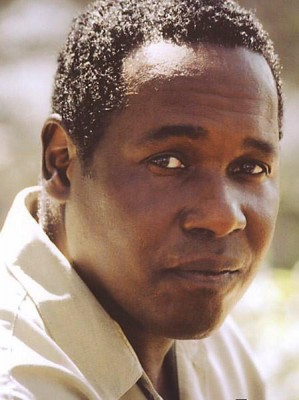
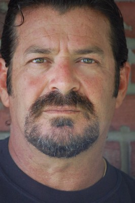
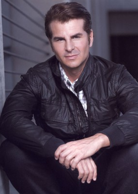

#881 Transporter 2 - The Mission
 
 IMDB-Wertung: 6.3 / 10
IMDB-Wertung: 6.3 / 10  Metascore: 56
Metascore: 56 
Frank Martin der "Transporter" für alles. Ihn interessiert es nicht, was er an wen liefert oder warum er das tut. Hauptsache nach präziser Vollendung seiner Tätigkeit kommt das Geld in seine Kasse und er kann sich damit ein gemütliches Leben machen. Deshalb ist er auch von seinem neusten Job begeistert. Alles, was er zu tun hat, ist, den Schüler Jack Billings in Miami wenige Tage auf dessen Schulweg zu begleiten und zu beschützen. Nichts einfacher als das - denkt er sich. Doch sein gemütlicher Auftrag schweift bald um und er bekommt eine Menge ungewünschter Arbeit. Denn der Junge wird von einem Drogenkartell entführt und nun liegt es an Frank, den Jungen zu retten und die Pläne des Kartells zu zerschlagen...
Jahr: 2005
Dauer: 87 Minuten
FSK: 12
Land: Frankreich Studio: UFATonspuren: DTS-HD - ,
Untertitel: Deutsch, Englisch,
Auflösung: 1080p (1920x816) Größe: 10854 MB
Genre: Action, Krimi, Thriller
Regisseur: Louis Leterrier
Drehbuch: Luc Besson, Robert Mark Kamen, Luc Besson, Robert Mark Kamen
Soundtrack: Alexandre Azaria
Darsteller:
 Jason Statham als Frank Martin
Jason Statham als Frank Martin- Alessandro Gassman als Gianni Chellini
 Amber Valletta als Audrey Billings
Amber Valletta als Audrey Billings- Kate Nauta als Lola
-  Matthew Modine als Jefferson Billings
 Jason Flemyng als Dimitri
Jason Flemyng als Dimitri Keith David als Stappleton
Keith David als Stappleton- Hunter Clary als Jack Billings
- Shannon Briggs als Max
- François Berléand als Inspector Tarconi
 Jeff Chase als Vasily
Jeff Chase als Vasily- Gregg Weiner als Tipov
 AnnaLynne McCord als Car Jacking Girl
AnnaLynne McCord als Car Jacking Girl- Reggie Pierre als Car Jacker
- Tim Ware als Hoffman
- Damaris Justamante als Receptionist
 Marc Macaulay als U.S. Marshal Brown
Marc Macaulay als U.S. Marshal Brown- Bill Wilson als Agent at Billings House
 Robert Small als Government Doctor
Robert Small als Government Doctor- Jim R. Coleman als Robot Tech
- Heath Kelts als Security Agent
- Paul Tei als Tech in Van
-  Ernest Harden Jr. als Billings Aide
- Tim Powell als U.S. Marshal at Robot Site
- Serafin Falcon als Sniper
- Max Osterweis als The Phone's Man
- Laurence Gormezano als TV News Announcer Helicopter
-  Jay Amor als Gianni Thug , uncredited
- Scott Dale als Gianni Thug , uncredited
-  Vincent De Paul als Head of Billings' Security , uncredited
- Bobby Dodge als U.S. Marshal , uncredited
- Roberto Escobar als Jet Pilot , uncredited
 Richard Fitzpatrick als Security Agent , uncredited
Richard Fitzpatrick als Security Agent , uncredited- Jesse Holland als U.S. Marshal , uncredited
- Elissa Kapneck als Tourist , uncredited
- Bruce Perkins als U.S. Marshal , uncredited
- Frank Tedesco als Mysterious Onlooker , uncredited
- Raymond Tong als Rastaman
- George Kapetan als Dr. Sonovitch
- Gregg Davis als Techie at Billings
- Marty Wright als Commander
- Elie Thompson als Car Jacker
- Adam Faldetta als Car Jacker
- Michael House als Car Jacker
- Liv Davalos Maier als TV News Announcer
- Andy Horne als Dr. Koblin
- Doug MacKinnon als U.S. Marshal Smith
- Chris Campbell als Security Agent
- Shelah Marie als Nurse
- Tom Derek als U.S. Marshal at Stakeout
Datei: X:\4-Tetralogie(M-Z)\Transporter\Transporter 2 - The Mission (2005, FSK12, 1920x816).mkv seit 10.04.2015
Festplatte: HD Collection-3(N-Z)-6(A-Z)
 Es gibt insgesamt 7 Filme in der Gruppe '4-Tetralogie(M-Z)\Transporter'
Es gibt insgesamt 7 Filme in der Gruppe '4-Tetralogie(M-Z)\Transporter'